Plugins
Plugins and apps I wrote for the TAK ecosystem. Each exists because something in ATAK was missing for me first.
Submitted to Google Play
 On Google Play
On Google Play
TakLab Hub
Android app
Takes a phone from empty to a working ATAK client. Fetches a catalogue, installs ATAK and its plugins with checksum verification, and provisions a server environment.
Read more →
On Google Play
SniperTAK
ATAK-CIV plugin
A ballistic calculator built into the ATAK map. It computes range and wind corrections, accounts for density altitude, and plots an observation post.
Read more → WorkingPrintPlugin
ATAK-CIV 5.8 plugin
Saves the current map view as A4 sheets in a PNG or PDF file. 300 dpi, optional MGRS grid, selectable scale.
Read more →
WorkingSimplePlugin
ATAK-CIV 5.8 plugin
Cuts the ATAK interface down to the tools of one of five scenarios. A sixth button undoes every change.
Read more →